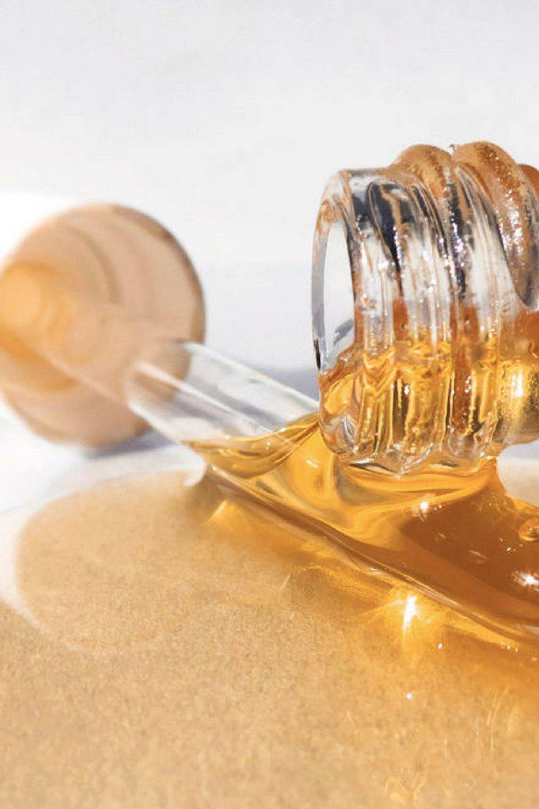

Beauty advice
уход за кожей и волосами в домашних условиях
⇐ на главную
Hair masks
❤ Каждая девушка желает, чтоб у нее были красивые волосы. У каждого человека волосы абсолютно разные и необходим индивидуальный уход.
❤ Маски могут быть увлажняющими, питательными, укрепляющими, восстанавливающими и так далее.
Одно из главных преимуществ приготовления маски для волос своими руками - уверенность в качестве и в отсутствии лишних продуктов в составе, а также, что она подойдет под конкретную особенность волос.
❤ На качество волос влияет множество факторов. Из внешних источников влияния - температура, жёсткая вода, окрашивания и химические средства. Также качество волос зависит от состояния здоровья, но в этом случае рекомендуем обратиться к специалисту.
❤ Перед нанесением маски необходимо очистить кожу от декоративной косметики и грязи, которая могла оказаться на лице после насыщенного дня. Нужно очистить кожу специальным средством, которое подходит конкретно для вашей кожи, а после рекомендуем сделать скраб для лица. Так полезные вещества лучше воздействуют на кожу.
❤ Обратите внимание, что перед некоторыми масками нужно обязательно сделать "тест" на маленькой прядке волос на отсутствие аллергической реакции.
❤ Маску нужно наносить на чистые волосы после мытья как правило от середины и до кончиков волос (исключение: маска для роста волос). Советуем перед нанесением расчесать волосы: так маску легче будет распределить по прядям. Процедуру можно повторять регулярно - 1-2 раза в неделю, чтобы поддерживать результат.
❤ Важный аспект, что маску следует готовить непосредственно перед применением, чтоб все полезные компоненты оставались свежими и приносили исключительно положительный эффект.
Ингредиенты:
❤ банан - 1 шт.
❤ жидкий мёд - 5 гр.
❤ сметана - 15 гр.
❤ яичный желток - 1 шт.
Из целого банана нужно сделать банановое пюре. Далее следует добавить все остальные компоненты и тщательно вымешать. Готовую маску нанести на волосы по всей длине и закутать волосы, смыть спустя час.
Ингредиенты:
❤ желатин - 15 гр.
❤ тёплая вода - 45 мл.
Желатин добавить в воду и подождать, пока он не разбухнет. Это средство аккуратно нанести на каждую прядь, а после укутать волосы в полиэтиленовую шапку и полотенце. Для большего эффекта можно посушить волосы с маской феном. Благодаря желатину волосы напитаются, выпрямлятся, появится здоровый блеск.
Ингредиенты:
❤ касторовое масло - 50 мл.
❤ яичный желток - 2 шт.
❤ глицерин - 25 мл.
Касторовое масло слегка прогреть, а после в него добавить яичные желтки и глицерин, тщательно вымешать. Маску нанести на всю длину волос, закутать волосы в шапочку и полотенце и выждать 40 минут. Смывать теплой водой.
Ингредиенты:
❤ горчица - 20 гр.
❤ вода - 5 мл.
❤ жидкий мёд - 20 мл.
❤ яйцо - 1 шт.
Все ингредиенты хорошо перемешать и нанести готовую массу на волосы, особенное внимание уделяя зоне возле корней. Закутать волосы в полиэтиленовую шапку и полотенце, подождать 40 минут.
P.S. Если маска начинает сильно жжечь - срочно смывайте ее с волос.
Про маски для волос
Восстанавливающая маска с бананом

Желатиновая маска с эффектом ламинирования
Увлажняющая маска с касторовым маслом
Горчичная маска для роста волос
With love to you...